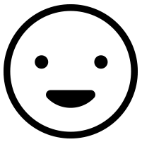

Automate This!
{{ firstName }} was a {{ jobtitle }} who loved technology. Although she loved parts of her job, she absolutely hated {{ tedioustask }} and {{ dirtytask }} .
So, {{ firstName }} met with her life mentor {{ celebrity }} who told her to learn how to {{ uselessskill }} with Thinkful. Thinkful didn't offer a course on {{ uselessskill }}
What a great decision! With her new skills, {{ firstName }} build a(n) {{ adjective }} robot named {{ obnoxiouscelebrity }} that not only loved {{ dirtytask }} but did it {{ number }} faster.